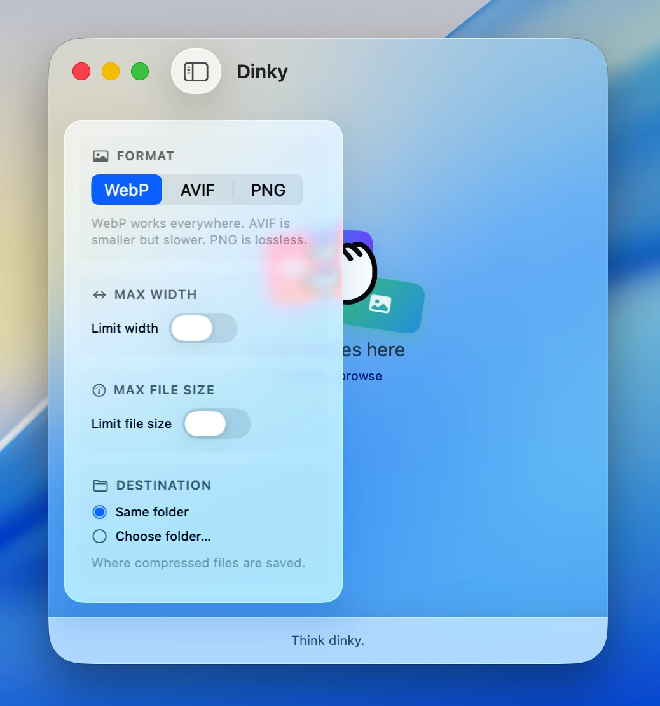
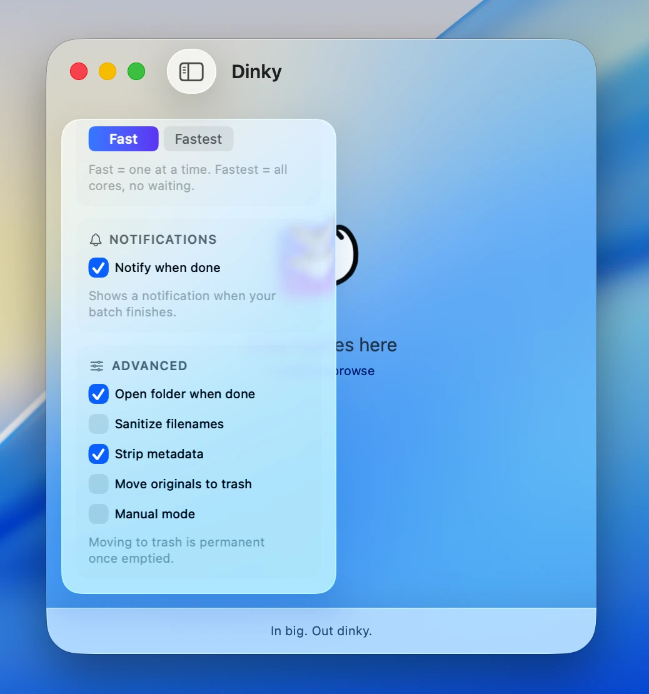

Dinky
Making images smaller.
A tiny macOS app that converts JPGs and PNGs into WebP, AVIF, or lossless PNG. Drag and drop, get smaller files back. Free and open source.
4.3 MB · v1.0.0 · Requires macOS 26 Tahoe
Making images smaller.
A tiny macOS app that converts JPGs and PNGs into WebP, AVIF, or lossless PNG. Drag and drop, get smaller files back. Free and open source.
4.3 MB · v1.0.0 · Requires macOS 26 Tahoe



Drop images on the window, or use the file picker.
Output to WebP, AVIF, or lossless PNG. That's where the real savings live.
Resize on the way out with common web presets or a custom value.
Binary-searches the quality level to hit an exact KB or MB target.
Multiple files compress concurrently with live results as they finish.
Run oxipng on PNGs when you need to keep transparency or format fidelity.
Drop files first, then right-click each one to pick a format individually.
Select, drag, double-click to open, right-click for per-file actions.
Compress straight from Finder's right-click menu, no app launch needed.
Fast runs one at a time. Fastest uses every core, no waiting.
Save next to the original, pick a custom folder, or trash originals after.
Notifications that change with the count and time. Animations with character.